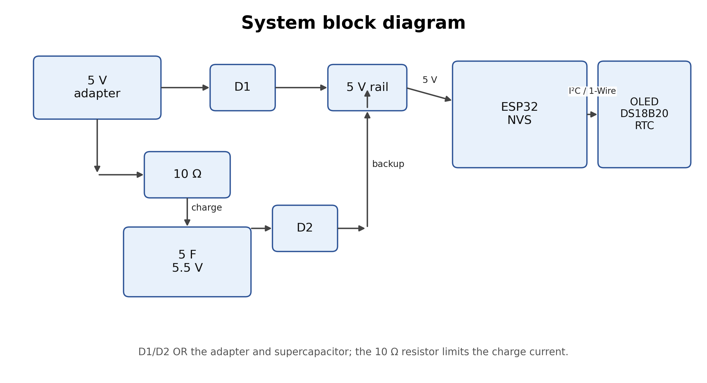

Project Proposal for Approval — Embedded Systems Mini-Project
Student: Dandu Surath Preetham
Roll number: BL.SC.U4CSE24212
Embedded data loggers are often deployed where the power supply is unreliable. A sudden loss of the 5 V supply can interrupt a non-volatile memory write, corrupt the stored record, or leave the controller in an undefined state. A battery-backed UPS solves this problem but adds cost, charging circuitry, weight, and maintenance.
The project addresses the narrower and practically important case of a short power interruption:
When the adapter is lost, the logger should have enough energy to finish the critical write, store a valid record, and recover that record on the next boot — without a battery.
Most low-cost student loggers assume that power stays on. This project treats power failure as a first-class design event.
A low-cost power-fail-safe sensor logger detects adapter loss, holds up the electronics with a supercapacitor, saves the last reading and timestamp to non-volatile memory with a CRC, and restores the record on the next boot.

Figure 1: System block diagram. D1/D2 provide adapter OR-ing; the 10 Ω resistor limits the supercapacitor charge current; the adapter-sense divider is before D1.
Module connections:
| ESP32 pin | Connects to | Notes |
|---|---|---|
| 3V3 | OLED VCC, DS3231 VCC, DS18B20 VDD, 4.7 kΩ pull-up | 3.3 V rail |
| GND | OLED GND, DS3231 GND, DS18B20 GND, LED cathode, buzzer, button, dividers, SC− | Common ground |
| GPIO21 | OLED SDA, DS3231 SDA | I²C data |
| GPIO22 | OLED SCL, DS3231 SCL | I²C clock |
| GPIO4 | DS18B20 DQ | 4.7 kΩ pull-up to 3.3 V |
| GPIO34 | Adapter-sense divider midpoint | ADC; divider before D1 |
| GPIO35 | Supercapacitor-sense divider midpoint | ADC |
| GPIO26 | 220 Ω → LED → GND | Status LED |
| GPIO25 | Buzzer → GND | Optional |
| GPIO16 | Button → GND | Optional |
Firmware sequence: RUN → POWER_FAIL → SAVE → DISPLAY → WAIT → RECOVER → RUN.
The record contains a magic number, sequence number, temperature, timestamp, power-fail flag, and CRC16. On boot, the firmware validates the record; a valid record with the power-fail flag set is displayed as RECOVERED.
RECOVERED.| Component (qty) | Purpose |
|---|---|
| ESP32 DevKit V1 ×1 | Controller; built-in NVS; USB programming |
| Supercapacitor, 5.5 V, 5 F ×1 | Hold-up; 4×1.5 F parallel is an alternative |
| 1N5819 Schottky diode ×2 | Power OR-ing (D1, D2) |
| 10 Ω, 5 W resistor ×1 | Charge-current limit |
| Resistor kit: 10 kΩ ×4, 4.7 kΩ ×1, 220 Ω ×2 | Dividers, DS18B20 pull-up, LED |
| 0.96" SSD1306 OLED, I²C ×1 | Status/recovery display |
| DS18B20 temperature sensor ×1 | Logged quantity |
| DS3231 RTC module + coin cell ×1 | Timestamp; coin-cell backup |
| Breadboard, terminal block, jumpers, 5 V adapter, USB cable, multimeter ×1 set | Prototyping, power, measurement |
Software: Arduino IDE with the ESP32 core; Adafruit GFX, Adafruit SSD1306, OneWire, DallasTemperature, RTClib, and the ESP32 Preferences library.
POWER LOST → SAVING... → SAVED.RECOVERED with the last temperature and timestamp.Deliverables: a working prototype, a measured hold-up time, a 20-cycle recovery count, a CRC record-integrity check, a complete report, and a viva-ready explanation. No result is claimed before the prototype is tested.
Supercapacitor backup, brownout detection, NVS/EEPROM, and CRC-protected records are established techniques. This project does not claim a new concept. The contribution is a low-cost, explainable power-fail architecture with a discrete diode-OR path, a deterministic save/recover state machine, a CRC-protected NVS record, and a measured hold-up/recovery evaluation.
The simple diode-OR path does not fully isolate the supercapacitor when the adapter is present; this is documented as a prototype limitation. A power-path switch is future work.